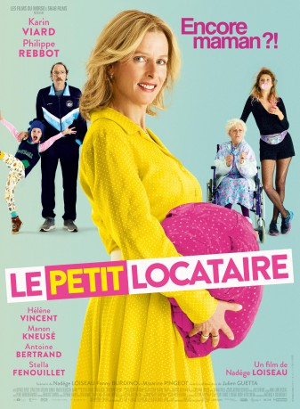

IMDB-Wertung: 6.0 / 10
IMDB-Wertung: 6.0 / 10  Metascore:
Metascore: 
The test is positive! Nicole, 49 year old mom, is pregnant again. Calamity or good news? The whole family is upside down.
 IMDB-Wertung: 6.0 / 10 Metascore:
The test is positive! Nicole, 49 year old mom, is pregnant again. Calamity or good news? The whole family is upside down.
Jahr: 2016
Dauer: 104 Minuten
FSK: 6
Land: Frankreich Studio: Wild BunchTonspuren:
Untertitel:
Auflösung: 1080p (1920x800) Größe: 3409 MB
Genre: Komödie
Regisseur: Nadège Loiseau
Drehbuch: Fanny Burdino
Soundtrack:
Darsteller:
 Karin Viard als Nicole Payan
Karin Viard als Nicole PayanDatei: X:\2016(N-Z)\Unerwartete Glück der Familie Payan, Das (2016, FSK6, 1920x800).mkv seit 15.12.2017
Festplatte: HD 2016(A-Z)
 Es gibt insgesamt 182 Filme in der Gruppe '2016(N-Z)'
Es gibt insgesamt 182 Filme in der Gruppe '2016(N-Z)'